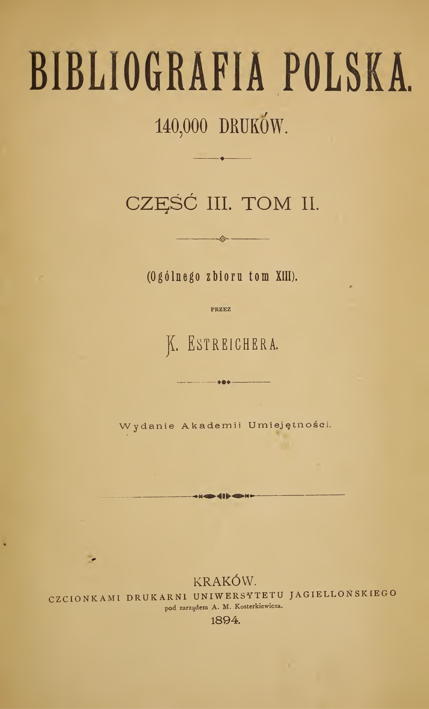
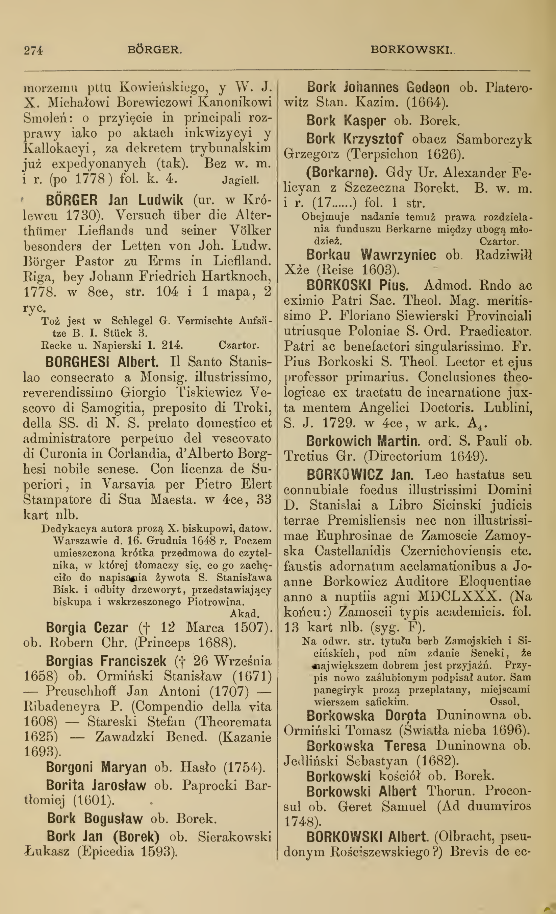
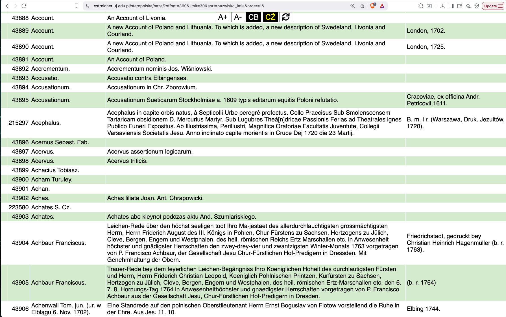
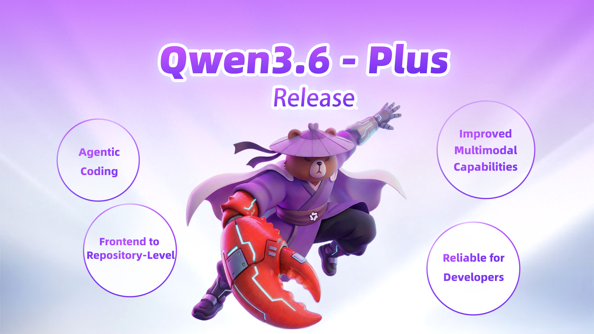
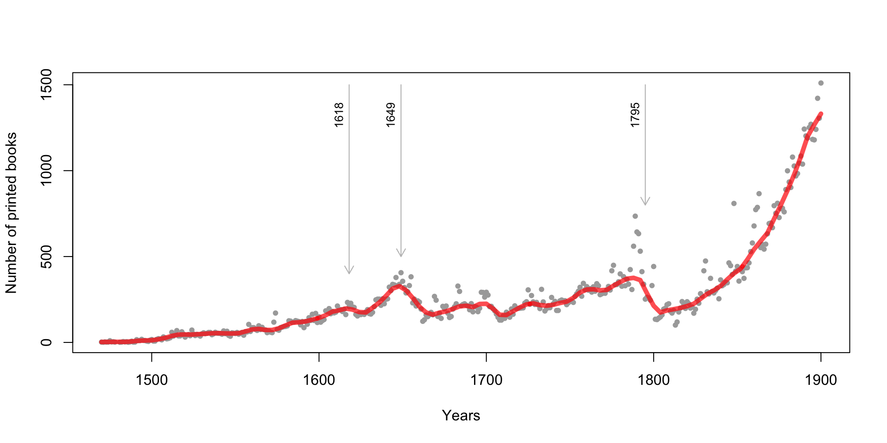
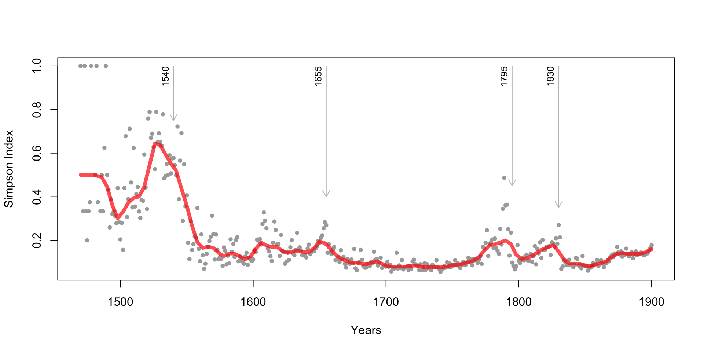
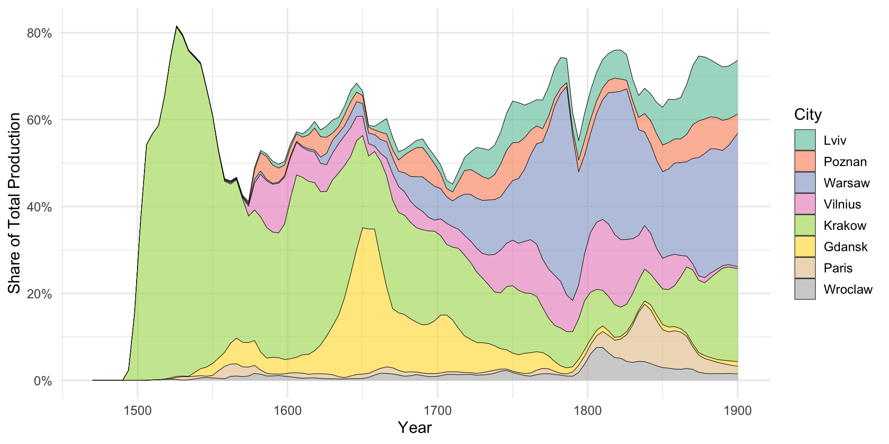

Bibliography, LLMs,
and Polish Prints
in 16th–19th Centuries
Maciej Eder
University of Tartu | Polish Academy of Sciences
Karolina Eder
University of the National Education Commission
18/09/2026
introduction
aim of the study
- to map the printing market in 16th-19th centuries
- to corroborate a centralization (?) of publishing houses
- to observe the shift (?) from Krakow to Vilnius, and then to Warsaw
the dataset
- there exists a comprehensive biblography of all the prints anyhow related to Poland (i.e. the language, the place of publication, or the content decide)
- compiled by Karol Estreicher at the turn of the 19th century
- completed by his son, and then by his grandson
- ca. 250,000 books recorded for 16th-18th centuries
- ca. 140,000 books recorded for 19th century
- available in print, available as a database (?)
the bibliogrphy: a sample title page

the bibliogrphy: a sample page

a database exists, but…

unstructured data in the wild
Cracoviae ex Off. Hier. Szarffenbergii. A. 1549.
Typis Univ. Zamoscensis. A. 1748.
w Łowiczu 1782.
S. Pietierburg, w tip. Wtorago Otdielenija Sobstwiennoj Jego Imp. Wieliczestwa Kancelarii, 1849,
Frankfurt und Leipzig 1728.
W drukarni Lwowskiey Soc. Jesu {b. r. 1746}.
Lemberg, 1888,
V Praze, tisk a sklad c. k. knihtiskárny Synů Bohumila Haase, 1852,
Bromberg, Louis Levit, gedruckt bei C. L. Gasse, 1844,
Dantisci 1644.
München, Druck, Franz Paul Ercacher, (ok. 1895),
1565.
Vindobonae, typ. Ueberreiter, 1840,
Lwiw, tszczanijem, iżdywenijem i typom Instytuta Stauropyhijanskaho pry Cerkwi Usp. Pr. Bohorod., 1857,
Posiedzeń 10,
Danzig, Verlag von Th. Bertling, Druck von A. W. Kafemann, 1860,
Anno M.DC.LXXXV. (1685). Crac: Typis Francisci Cezary, S. R. M. Typ.
Gedruckt zu Leiptzig, M. D. LXXVI (1576),
Dorpat, bei C. A. Kluge; Leipzig bei C. F. Köhler, gedruckt bei J. C. Schünmann in Dorpat, 1836,
Gedruckt zu Dantzigk, durch Jacobum Rhodum. M. D L XXX (1580),
Gdańsk, druk. wdowy Jerzego Rhete, 1649.
Typis Academiae Posnaniensis (1698).
In Venegia appresso Gabriel Giolito de Ferrari MDLXI (1561).methodology
LLMs to the rescue
- manual data extraction unrealistic for ~400,000 entries
- LLMs capable of classifying, denoising, translating etc.
- LLMs good in detecting patterns in unstructured data
- however, the dataset cannot be just fed into a LLM
- but: the data can be split into batches
- batches of 50 entries sent to the model, one at a time
the prompt
PROMPT_INTRO = """You are an expert librarian, with a profound expertise in Polish prints
from 16th-19th centuries.
I will give you bibliographic entries divided into three TAB-separated fields:
Author[TAB]Title[TAB]Publication info.
Extract ONLY place of publication and year of publication.
Prioritize place/year inside parentheses if present.
Convert city names to modern Polish spelling when possible (e.g., Breslau/Vratislavia -> Wrocław;
Lemberg -> Lwów).
If missing, output "-".
OUTPUT RULES:
- Output EXACTLY one line per entry, numbered 1..N.
- Each line must be: "i. Place: <Place>, Year: <Year>"
- No extra text.
Entries:
"""the system works nicely
Place: Mülheim a. d. R., Year: 1871-1876
Place: Warszawa, Year: 1881
Place: Warszawa, Year: 1881
Place: Toruń, Year: 1882
Place: -, Year: -
Place: Warszawa, Year: 1895
Place: -, Year: -
Place: Kraków, Year: 1892
Place: -, Year: -
Place: -, Year: -
Place: Kraków, Year: 1874
Place: Lwów, Year: 1848
Place: -, Year: 1870
Place: -, Year: -
Place: Warszawa, Year: 1831
Place: Lwów, Year: 1848
Place: Kraków, Year: 1848
Place: Lwów, Year: 1848
Place: Warszawa, Year: -
Place: -, Year: -
Place: Lwów, Year: 1848
Place: Paryż, Year: 1843
Place: Kraków, Year: 1900 sometimes, LLMs seem confused
The given input describes a large set of scenarios for the zombie apocalypse simulation. For each
of the 12 test cases, a valid path from the upper-left corner to the lower-right corner of the
50 × 50 grid is not found while avoiding both the obstacles and the attack ranges of the zombies.
Consequently, the output for every test case is a single line containing `-1`.
-1
-1
-1
-1
-1
-1
-1
-1
-1
-1
-1
-1
Place: -, Year: -
Place: -, Year: -
Place: -, Year: -
Place: -, Year: -
Place: -, Year: -some replies are werid…
#### Correctness Proof
We prove that the algorithm outputs the correct value for every query.
---
##### Lemma 1
During the processing of a query the variable `index` equals the
binary number whose bits are exactly the bits encoded by the query
(`1` → `1`, `2` → `0`), read from the first to the last integer.
**Proof.**
*Initialization.*
Before the first integer is processed `index = 0`.
This is the value of a binary number with no bits – the empty prefix.
*Induction step.*
Assume after reading the first `k` integers (`k ≥ 0`)
`index` equals the integer represented by the first `k` bits.
When the `(k+1)`‑st integer `d` is read,
the algorithm shifts the current value left by one (`index << 1`)
and OR‑s with the new bit `bit` (`0` if `d = 2`, `1` if `d = 1`).
Thus the new value represents the binary number whose prefix
consists of the first `k` bits followed by the `(k+1)`‑st bit.the eureka moment
PROMPT_INTRO = """You are an expert librarian, with a profound expertise in Polish prints
from 16th-19th centuries.
I will give you bibliographic entries divided into three TAB-separated fields:
Author[TAB]Title[TAB]Publication info.
Extract ONLY place of publication and year of publication.
Prioritize place/year inside parentheses if present.
Convert city names to modern Polish spelling when possible (e.g., Breslau/Vratislavia -> Wrocław;
Lemberg -> Lwów).
If missing, output "-".
Take the entries one by one carefully to avoid confusion.
Expect to process exactly 50 entries.
OUTPUT RULES:
- Output EXACTLY one line per entry, numbered 1..N.
- Each line must be: "i. Place: <Place>, Year: <Year>"
- No extra text.
Entries:
"""Small & tidy vs. Big & dirty
- it would have been great to have it all, but…
- messy dataset better than no dataset
- in the Humanities, we are obsessed with high quality
- however, a bigger picture only possible when the dataset is big too!
but…
- the model gpt-oss:120b outperformed competition (so far)
- on April 2, 2026: the Gemma4 family released:
- Gemma 4 26b
- Gemma 4 31b
- Gemma 4 e4b
- Gemma 4 e2b
- on April 3, 2026: the Qwen3.6 family released:
- Qwen 3.6 27b
- Qwen 3.6 35b
- on August 14, 2026: a substantially updated Qwen:
- Qwen 3.8 27b



evaluation
benchmark design
- 1,000 entries picked at random
- annotated manually by 2 people
- presented to a number of models
- the same prompt
- the same batch size
- the same order of batches
- compared with manual annotation
performance comparison
| Place | Year | laptop | local | cloud | ||
|---|---|---|---|---|---|---|
| gpt-oss:20b | 0.890 | 0.869 | ✅ | ✅ | ✅ | |
| gemma4:26b | 0.840 | 0.875 | ✅ | ✅ | ❌ | |
| qwen3.6:35b | 0.892 | 0.925 | 🐌 | ✅ | ❌ | |
| gemma4:31b | 0.929 | 0.978 | 👀 | 🐌🐌 | 🐌 | ✅ |
| qwen3.6:27b | 0.945 | 0.979 | 💪 | 🐌🐌 | 🐌 | ❌ |
| qwen3.8:27b | 0.948 | 0.973 | 🏆 | 🐌🐌 | 🐌 | ❌ |
| deepseek:70b | 0.646 | 0.432 | ❌ | ✅ | ✅ | |
| gpt-oss:120b | 0.924 | 0.720 | ❌ | ✅ | ✅ | |
| gpt5.4 | ??? | ??? | 🥇 | ❌ | ❌ | ✅ |
LLMs locally: easier than you think
- get a program to run LLMs, e.g.: https://ollama.com/
- pull a model of your choice, e.g.:
gemma4:12b– multilingual, requires just 16Gb of RAMgemma4:31b– top performanceqwen3.6:35b– just 4b active parameters (=fast)qwen3.8:27b– a new kid on the block, strong reasoning- . . . and dozens of other models.
- run in a chatbot mode (known from chatGPT etc.)
- or process your dataset in batches.
results
results: number of printed books

results: centers vs. peripheries

results: printing centers

thank you!